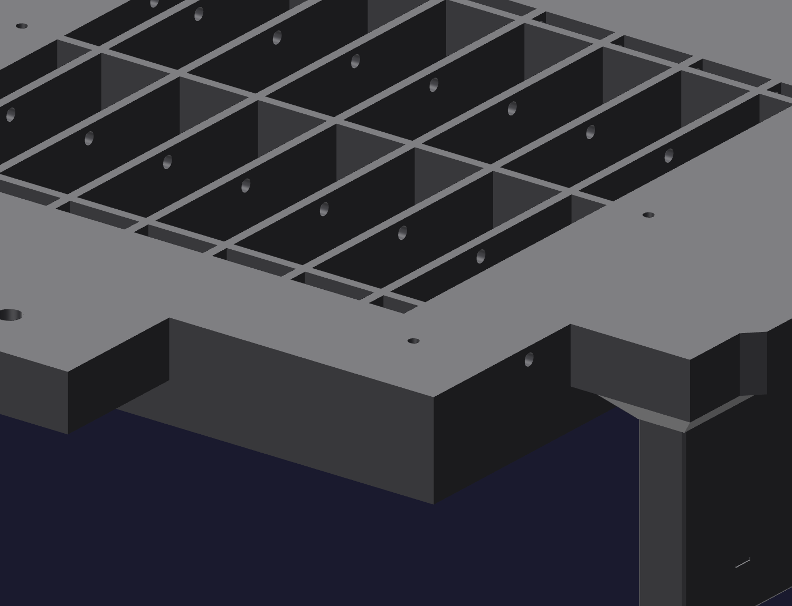

Off the bed11
Clear every passage
The mold breathes through small holes. A string left in one of them turns a vented mold into a sealed one, and you find out under vacuum with silicone already in it. Do this with a bright light and a piece of wire, on both halves, before anything else.

- Four transverse backing-air channels per half. Cavity: near the feet. Core: near the open back. They must pass right through, side to side.
- Four side air exits at the feet of the cavity's guide towers.
- Every rib bay on both halves — strings, blobs, stray purge.
- The pour throat in the core plate, 11 mm, and its dish.
- Five silicone vents, 2.5 mm each. These print near the low end of what a 0.8 mm nozzle resolves; expect to open them.
⛔ Two air systems that never meet
Backing air vents the structure to the chamber and must stay free of coating and
silicone forever. Pour and vents carry silicone and must stay open through the
cast. They do not connect — the geometry asserts it — and nothing you do
should join them.